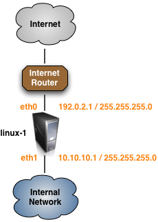
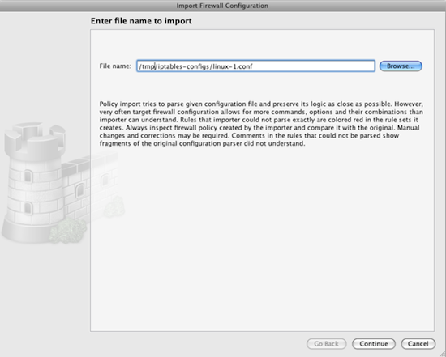

Author: Mike Horn <mike [at] netcitadel [dot] com>
http://www.fwbuilder.org
Firewall Builder is a firewall configuration and management GUI that supports configuring a wide range of firewalls from a single application. Supported firewalls include Linux iptables, BSD pf, Cisco ASA/PIX, Cisco router access lists and many more. The complete list of supported platforms along with downloadable binary packages and soure code can be found at http://www.fwbuilder.org.
Import of existing iptables configurations was greatly improved in the recently released Firewall Builder V4.2. Features like object de-duplication and expanded rules recognition make it even easier to get started using Firewall Builder to manage your iptables configurations.
For this tutorial we are going to import a very basic iptables configuration from a firewall that matches the diagram shown below.
Firewall Builder imports iptables configs in the format of iptables-save. Script iptables-save is part of the standard iptables install and should be present on all Linux distribution. Usually this script is installed in /sbin/.
When you run this script, it dumps the current iptables configuration to stdout. It reads iptables rules directly form the kernel rather than from some file, so what it dumps is what is really working right now. To import this into Firewall Builder, run the script to save the configuration to a file:
iptables-save > linux-1.conf
As you can see in the output below, the example linux-1.conf iptables configuration is very simple with only a few filter rules and one nat rule.
# Completed on Mon Apr 11 21:23:33 2011
# Generated by iptables-save v1.4.4 on Mon Apr 11 21:23:33 2011
*filter
:INPUT DROP [145:17050]
:FORWARD DROP [0:0]
:OUTPUT DROP [1724:72408]
:LOGDROP - [0:0]
-A INPUT -m state --state RELATED,ESTABLISHED -j ACCEPT
-A INPUT -i eth1 -s 10.10.10.0/24 -d 10.10.10.1/32 -p tcp -m tcp --dport 22 -m state --state NEW -j ACCEPT
-A FORWARD -m state --state RELATED,ESTABLISHED -j ACCEPT
-A FORWARD -o eth0 -s 10.10.10.0/24 -p tcp -m tcp --dport 80 -m state --state NEW -j ACCEPT
-A FORWARD -o eth0 -s 10.10.10.0/24 -p tcp -m tcp --dport 443 -m state --state NEW -j ACCEPT
-A FORWARD -j LOGDROP
-A LOGDROP -j LOG
-A LOGDROP -j DROP
COMMIT
# Completed on Mon Apr 11 21:23:33 2011
# Generated by iptables-save v1.4.4 on Mon Apr 11 21:23:33 2011
*nat
:PREROUTING ACCEPT [165114:22904965]
:OUTPUT ACCEPT [20:1160]
:POSTROUTING ACCEPT [20:1160]
-A POSTROUTING -s 10.10.10.0/24 -o eth0 -j MASQUERADE
COMMIT
# Completed on Mon Apr 11 21:23:33 2011
If you are running Firewall Builder on a different system than the one that is running iptables copy the file linux-1.conf from the firewall to the system where Firewall Builder is running.
Launch the Import wizard by selecting the File -> Import Firewall menu item.
Click Browse to find the file named linux-1.conf.
Click the Continue button to move to the next step of the import process.